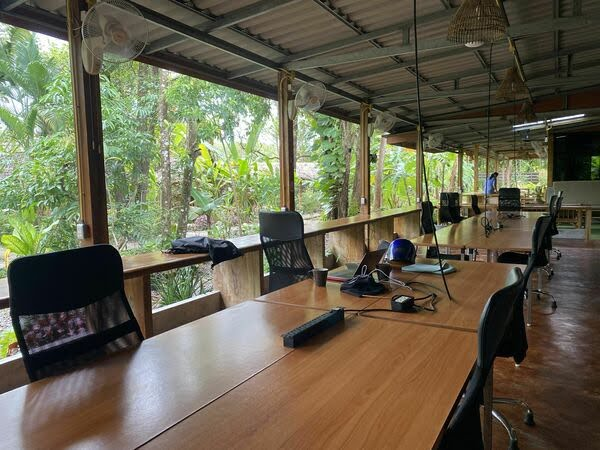

Newsletter #8: Kohub
This newsletter was originally published on the Revue platform, which Twitter (now X) killed after being taken over by Elon Musk. I now republish it here. My latest newsletters are on Convertkit.
While the rest of the world has mostly left Covid behind them. In Asia things open up more slowly.
Japan only last week opened its borders for foreign tourists. In Thailand, despite the borders having been open since the beginning of 2022, rebuilding the social fabric takes a while.
This week my spouse has school holidays, and we’re spending the week on the island of Koh Lanta.
Koh Lanta has one co-working space, KoHub Tropical Coworking, which has been closed for the last two years, it opened this week.
So on the first Monday of our holiday, I knock on the doors of the co-working space. And 3 friendly Thai women look at me with an astonished face. They open the building, turn on the lights, show me where I can get tea.
It feels I’m bringing this place out of hibernation.
Firing up the internet takes a little longer (thank you 4G for saving my ass so many times). And also the hipster coffee bar isn’t operational yet.
I haven’t been here before Covid, but looking at the sheer size of this place, it must have been a bustling co-working.
Later, the friendly owner tells me before Covid there used to be a 100 people every day. Here comes my dilemma.
I hope this becomes a bustling place again soon. You can just feel how much energy this place used to have before.
But if it becomes a bustling hub again, it will also mean mass tourism is back. And we’re back in the overcrowded 2019s.
In the end, it’s not in my circle of influence, every pro has its con, it’s best to accept the situations which you cannot influence, and take them to your heart!
Have a good week from Kohub!
